Ethan Weber | Project 3-2 | CS184/284a
Overview
The goal of this project is to build on Project 3-1, where here we add more features such as more complicted materials, environment lights, or depth of fields effects. I'm choosing to focus on mirror and glass materials (part 1), and depth of field (part
4). We render images of width 480 x 360 pixels per the recommendation of the project, and we show the different relevant commands that we run to help explain the parameters that we use for rendering the images. Note that Part 1 focuses on reflection
and refraction. Part 4 focuses on depth of field with a thin-lens camera model instead of the typical pinhole model.
Note about M1 AMD64 hardware. This project with the staff solution from 3-1 didn't work to run on my laptop, so I had to resort to remote compute, which made the project quite difficult to use the GUI. I use the standard camera viewpoint for
this reason, as trying to get a remote GUI to work proved difficult. It would be great to support M1/AMD64 hardware in the future. Thanks.
Deliverables
Part 1
-
Show a sequence of six images of scene
CBspheres.dae rendered with max_ray_depth set to 0, 1, 2, 3, 4, 5, and 100. The other settings should be at least 64 samples per pixel and 4 samples per light.
- Point out the new multibounce effects that appear in each image.
-
Explain how these bounce numbers relate to the particular effects that appear.
The first part of this section was refactoring some of the code to make it work for refraction and reflection. I used the staff solution as starting point, so this was already done for me. The next part was implementing the mirror material.
The PDF is set to 1 because there is no loss or cosine term for this reflection, and the BSDF is a delta BSDF. That's why we divide by abs_cos_theta(*wi). We don't have the Lambertian falloff. Refraction is similar but now there is entering and exiting
rays where there are different index of refraction at the different materials (and the sign of Z changes too). We follow the steps carefully in the writeup to utilize Snell's law. When there is total internal reflection, we do not use wi. Glass material
has both reflection and refraction, and we use Schlick's reflection coefficient for modeling the probability of reflection vs. refraction (in the case where there is not total internal reflection). In the case when there is no internal reflection,
reflectance will be scaled by R and refraction will be scaled by (1 - R). Please see code for details.
Our commands to produce the images take the following form, "./pathtracer -t 8 -s 64 -a 64 0.05 -r 480 360 -m X -l 4 -f p1_CBspheres_max_ray_depth_X.png ../dae/sky/CBspheres.dae" for X = 0, 1, 2, 3, 4, 5, and 100 per the requirements.
Here we have 64 samples per pixel, we use 4 samples per light, we use adaptive sampling, and we show different max_ray_depth values. The following images have max ray depth from 0 to 100, as indicated by the X values above. You can see the filenames
of the images for clarity.
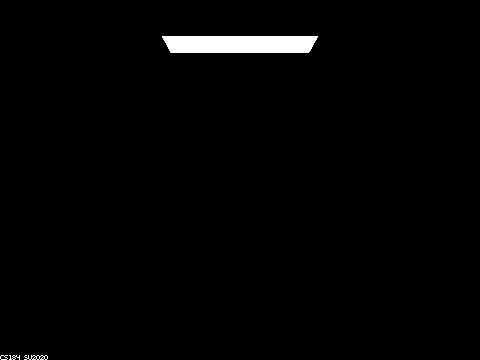
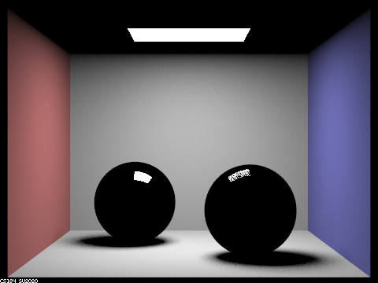
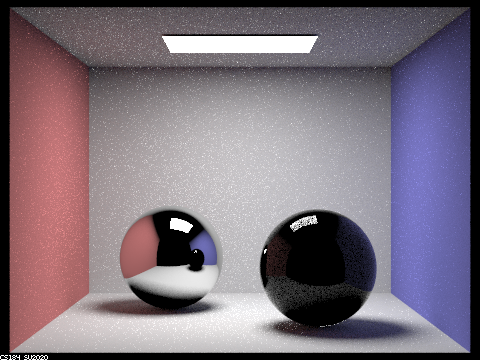
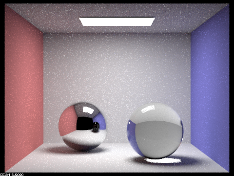
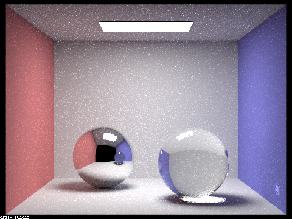
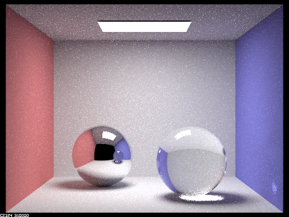
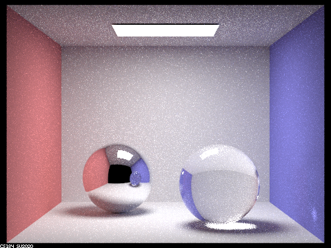
Multibounce effects. The leftmost image has a max ray depth of 0. This makes sense that you can only see the light source. The next image has a max ray depth of 1, so not you can see points that have a connection from the camera and to the
light source. Note that the left sphere is reflection and the right sphere is glass (which is why it is darker, so some rays go through the glass and bounce more times before reaching a light source). The next image has a max ray depth of 2, so now
a ray can bounce twice and hit the light source, which is why the left sphere has some color now. The right sphere has a bit of color, but this is because only some of the rays with some probability will reflect and hit the light source. The next
image has a max ray depth of 3, and this is where we start to see refraction rays because rays have enough bounces to go through the glass, hit a wall (for instance), and then hit the light source! In the next image (with max ray depth of 4), there
are enough bounces to see the color in the reflection of the right sphere in the left sphere. As you continue to max ray depth of 5 and 100, the image becomes even more brighter and realistic and begins to better resemble the actual scene with both
mirror material (left) and glass material (right, with both reflection and refraction).
Part 4
For these subparts, we recommend using a microfacet BSDF scene to show off the cool out of focus effects you can get with depth of field!
-
In a few sentences, explain the differences between a pinhole camera model and a thin-lens camera model.
-
Show a "focus stack" where you focus at 4 visibly different depths through a scene.
-
Show a sequence of 4 pictures with visibly different aperture sizes, all focused at the same point in a scene.
This part was all about imlementing depth of field for our render. This concept is actually really cool and requires a small change to how we create the rays coming from the camera. Essentially, we've been using the pinhole camera which will
shoot a ray from a pixel on the image plane (-X, -Y, 1), through the camera origin, i.e., center of the pinhole at (0,0,0) and then it'll go out into the scene and ray tracing will occur. Now, we have a difference where we use the thin-lens camera model. Then lense just means we model the lense with a thickness of 0. But, we now will sample a point uniformly on the lens, which has some radius, and we will pass a ray from (-X, -Y, 1) to this point (where Z = 0) and then, that ray will hit the "point of focus" at Z = -focalDistance, i.e., on the plane of focus. We can compute this focus point by using the original ray from the pinhole model. By constructing rays like this, we can now render the scene to focus at points that are on and close to the plane of focus and things will look blurry away from this plane! Super cool!
Here we show a "focus stack" with lens of radius 0.23 and very the focus distance X with "./pathtracer -t 8 -s 64 -a 64 0.05 -r 480 360 -m 5 -l 4 -f p4_CBdragon_depth_X.png -b 0.23 -d X ../dae/sky/CBdragon.dae" for X = 4, 4.5, 5, and 5.5 (left to right). The other parameters are similar to part 1. Notice how the plane of focus gradually moves back while regions away from this plane are more blurry.
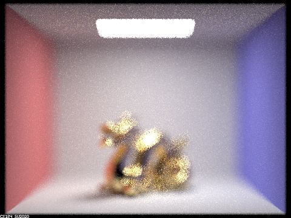
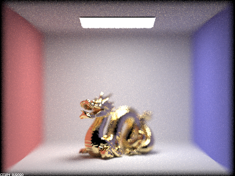
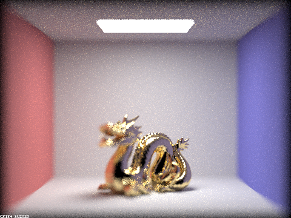
Here we set the focus distance to 5 and vary the lens radius X with "./pathtracer -t 8 -s 64 -a 64 0.05 -r 480 360 -m 5 -l 4 -f p4_CBdragon_depth_5_bX.png -b X -d 5 ../dae/sky/CBdragon.dae" for X = 0.23, 0.5, 1.0, and 1.5 (left to right). Notice how the larger the lens radius gets the more blurry the dragon becomes. This makes sense because the pinhole camera has a radius of size 0, in which everything is in focus then!
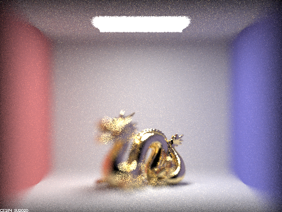
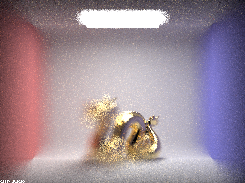
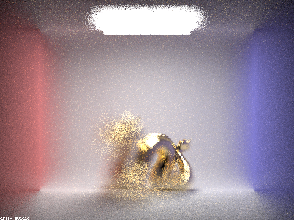